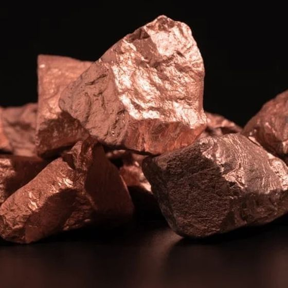
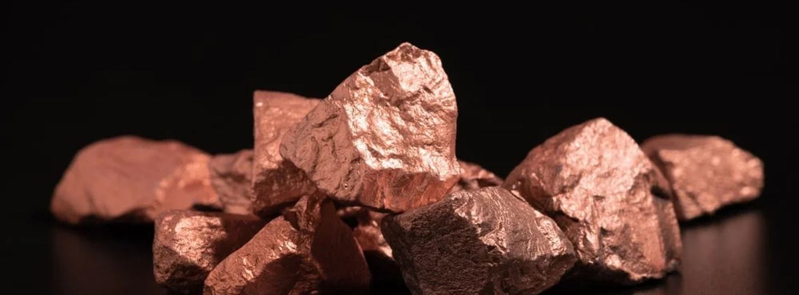
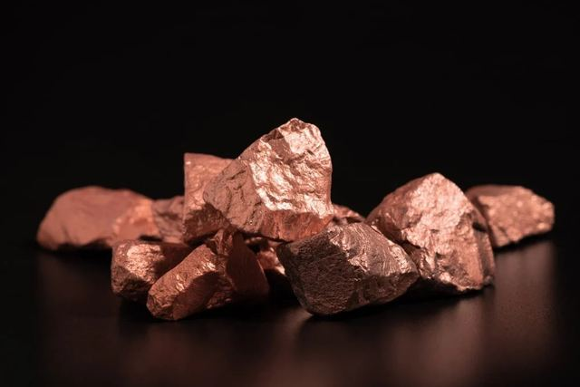

Amaya
Project
2,400 hectares of mineral rights in the Atacama Desert at 3,800 metres above sea level — with first-pass drilling pointing to a hidden porphyry copper system.
A private exploration asset in the world's premier copper belt.
Amaya is a private mineral exploration project comprised of 2,400 hectares of mineral rights located in the Atacama Desert at 3,800 metres above sea level, 80 km north of the city of Calama, Chile.
The first drilling campaign indicated a significant potential of hidden mineralization, in the form of a porphyry copper.

Native copper · Atacama
The targetA hidden porphyry copper system beneath the Atacama.
Surrounded by established operations.
The project sits within an established mining district, with two producing operations within a short radius to the southeast.

Minera El Abra
Operated by Freeport-McMoRan — one of the district's established copper operations.

Chonchi Mine
A further nearby operation reinforcing the prospectivity of the surrounding ground.

Calama
Regional mining hub providing logistics, workforce and infrastructure access.

3,800 metres above sea level2,400 hectares in the Atacama Desert, 80 km north of Calama.
Positioned on the West Fault.
As the project is present through the West Fault, this could indicate the presence in the area of a porphyry copper cluster.
The West Fault system is the structural corridor that hosts several of the region's major copper deposits — placing Amaya in a geologically favourable setting for further exploration.
From first pass to definition.
Mineral rights secured
2,400 hectares consolidated in the Atacama Desert, 80 km north of Calama.
First drilling campaign
Indicated significant potential of hidden mineralization in the form of a porphyry copper.
Structural interpretation
Project mapped across the West Fault — a corridor associated with regional porphyry copper clusters.
Next phase
Follow-up drilling and geophysics to define the extent and grade of the target system.
Enquiries welcome.
For information regarding the Amaya Project, please get in touch.